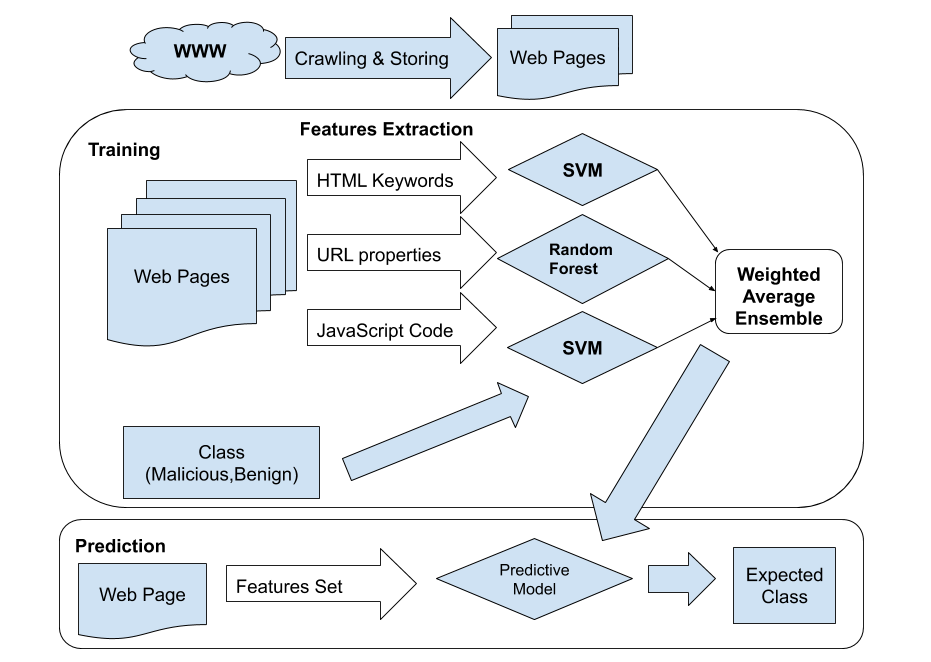

Problem
Static blacklist approaches struggle to cover recently infected web pages. The research explored whether multiple feature families could improve malicious page classification.
Security ML | MSc Thesis | National College of Ireland
A machine learning research project focused on identifying fraudulent web pages using URL properties, JavaScript-generated features, and HTML keyword density signals.
Static blacklist approaches struggle to cover recently infected web pages. The research explored whether multiple feature families could improve malicious page classification.
URL, JavaScript, and HTML-content features were analyzed independently, then modeled using SVM and Random Forest. A weighted-average ensemble combined the strongest signals.
The final architecture separated feature extraction, independent predictive models, and ensemble scoring so each signal family could be evaluated and improved.
The best model identified fraudulent web URLs with 95% precision, 95% recall, and 94% F1-score, showing the value of combining multiple web-page signals.

The project connects directly to modern AI platform thinking: feature quality, model boundaries, evaluation metrics, explainability, and the importance of combining signals instead of trusting one brittle classifier.
Open legacy project archive